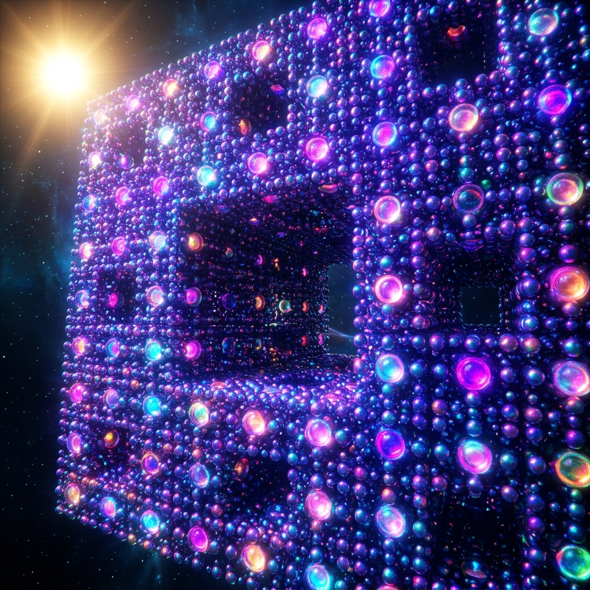
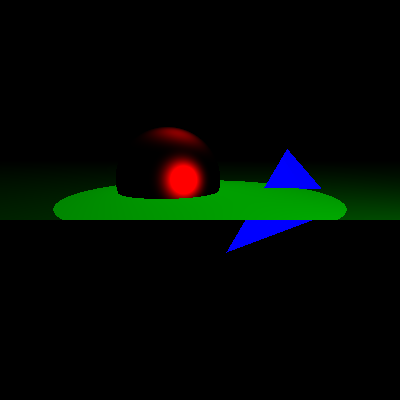
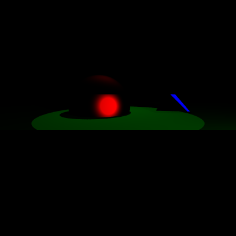
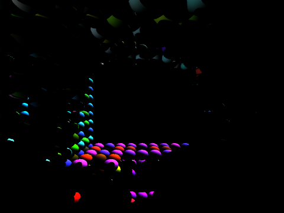
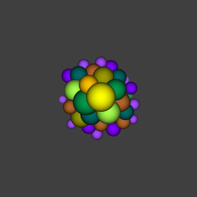
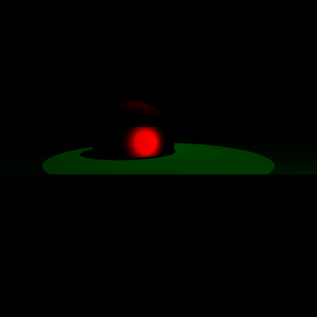

A high-performance raytracing engine capable of rendering complex procedural fractals with millions of primitives in seconds.

A procedural masterpiece constructed through recursive spatial subdivision and geometric pruning.
The scene follows the Menger Sponge fractal pattern. The space is divided into a 3x3x3 grid (27 sub-cubes). The main pattern is the removal of the 7 cubes located at the center of the grid and the centers of each face.
This recursive logic is implemented in build/buildDeath.cpp, where at each level, 20 new sub-fractals are spawned until the base case (Depth 0) is reached, placing a colored sphere with psychedelic shading.
Our BVH implementation transforms an O(N) intersection problem into an O(log N) traversal.
| Depth | Primitives | Default (s) | Accel (s) |
|---|---|---|---|
| 1 | 20 | 0.8 | 0.1 |
| 2 | 400 | 12.5 | 0.4 |
| 3 | 8,000 | 240.0 | 1.8 |
| Depth | Primitives | Default (s) | Accel (s) |
|---|---|---|---|
| 1 | 20 | 4.2 | 0.5 |
| 2 | 400 | 85.0 | 2.1 |
| 3 | 8,000 | 1,800.0 | 15.2 |
A detailed look at our core raytracing capabilities and feature evolutions.




